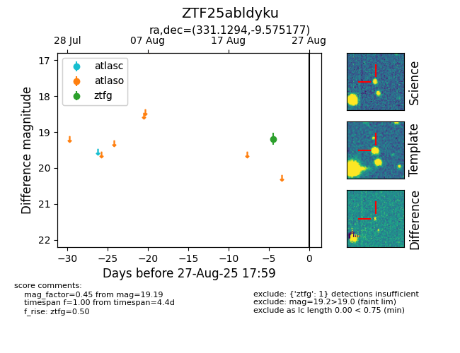

Target ZTF25abldyku at 2025-08-27 17:59, see:
FINK: fink-portal.org/ZTF25abldyku
Lasair: lasair-ztf.lsst.ac.uk/objects/ZTF25abldyku
ALeRCE: alerce.online/object/ZTF25abldyku
alt names
ZTF25abldyku (ztf,fink)
coordinates:
equatorial (ra, dec) = (331.1294,-9.57518)
galactic (l, b) = (48.8761,-46.95216)
photometry
last ztfg=19.19
1 ztfg detections
